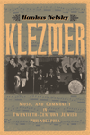

|
American Heathens
The Politics of Identity in a Pagan Religious Movement
Snook, Jennifer
An in-depth examination of American Heathenry and of those who practice and live according to its ethic
242 pp • 6x9 • Spring 2015
paper 978-1-4399-1097-9
cloth 978-1-4399-1096-2 |

|
Atlanta Unbound
Enabling Sprawl through Policy and Planning
Basmajian, Carlton Wade
How metropolitan Atlanta's regional planning groups accelerated the sprawl they were trying to control
New in Paperback!
288 pp • 7x10 • Spring 2015
paper 978-1-4399-0940-9 |
|
Chilean New Song
The Political Power of Music, 1960s-1973
McSherry, J. Patrice
An examination of the Chilean New Song movement as an organic part of the struggles for progressive social change
232 pp • 6x9 • Spring 2015
paper 978-1-4399-1152-5
cloth 978-1-4399-1151-8 |

|
The Concept of the Social in Uniting the Humanities and Social Sciences
Brown, Michael E.
How to reunify the humanities and social sciences
New in Paperback!
538 pp • 6x9 • Spring 2015
paper 978-1-4399-1016-0 |

|
Contemporary Social Constructionism
Key Themes
Weinberg, Darin
A critical overview of scholarship in social constructionism
New in Paperback!
214 pp • 5.5x8.25 • Spring 2015
paper 978-1-4399-0925-6 |
|
Creating a Buddhist Community
A Thai Temple in Silicon Valley
Bao, Jiemin
How a Thai Buddhist temple in northern California created a dynamic community that bridges national, racial, ethnic, religious, and gender differences
204 pp • 5.5x8.25 • Spring 2015
paper 978-1-4399-0955-3
cloth 978-1-4399-0954-6 |
|
Ethnic Renewal in Philadelphia's Chinatown
Space, Place, and Struggle
Wilson, Kathryn E.
How Philadelphia's Chinatown resisted and engaged with urban renewal processes in the late twentieth century
278 pp • 6x9 • Spring 2015
paper 978-1-4399-1215-7
cloth 978-1-4399-1214-0
|
|
Ghosts of Organizations Past
Communities of Organizations as Settings for Change
Ryan, Dan
What happens to communities after social organizations pack up and leave?
232 pp • 5.5x8.25 • Spring 2015
paper 978-1-4399-1255-3
cloth 978-1-4399-1254-6 |
|
The Identity Dilemma
Social Movements and Collective Identity
edited by McGarry, Aidan and James M. Jasper
Are identity politics good or bad for social movements?
238 pp • 6x9 • Spring 2015
paper 978-1-4399-1252-2
cloth 978-1-4399-1251-5 |
|
Illness or Deviance?
Drug Courts, Drug Treatment, and the Ambiguity of Addiction
Murphy, Jennifer
Exploring the moral frameworks for labeling, treating, and punishing drug addiction
244 pp • 6x9 • Spring 2015
paper 978-1-4399-1023-8
cloth 978-1-4399-1022-1 |

|
Imagined Liberation
Xenophobia, Citizenship, and Identity in South Africa, Germany, and Canada
Adam, Heribert and Kogila Moodley
A comparative examination of hostility towards migrants around the world
246 pp • 6x9 • Spring 2015
paper 978-1-4399-1190-7
cloth 978-1-4399-1189-1 |
 |
Klezmer
Music and Community in Twentieth-Century Jewish Philadelphia
Netsky, Hankus
The story of Philadelphia Jewish life through the music of klezmer
198 pp • 6x9 • Spring 2015
cloth 978-1-4399-0903-4 |
|
Knowledge LTD
Toward a Social Logic of the Derivative
Martin, Randy
What derivatives and excess, economic and otherwise, tell us about the state of global capital and culture
264 pp • 6x9 • Spring 2015
paper 978-1-4399-1224-9
cloth 978-1-4399-1223-2 |
|
The Mutual Housing Experiment
New Deal Communities for the Urban Middle Class
Szylvian, Kristin M.
How the sale of World War II public housing to non-profit mutual home-ownership associations represents a road not taken in federal housing policy
312 pp • 6x9 • Spring 2015
cloth 978-1-4399-1205-8 |

|
The New Freedom and the Radicals
Woodrow Wilson, Progressive Views of Radicalism, and the Origins of Repressive Tolerance
Kramer, Jacob
How progressives thought about radical politics at the beginning of the twentieth century
236 pp • 6x9 • Spring 2015
cloth 978-1-4399-0838-9 |
|
The New York Young Lords and the Struggle for Liberation
Wanzer-Serrano, Darrel
A landmark history of the New York Young Lords, and what their activism tells us about contemporary Latino/a politics
244 pp • 6x9 • Spring 2015
paper 978-1-4399-1203-4
cloth 978-1-4399-1202-7 |

|
The NFL
Critical and Cultural Perspectives
edited by Oates, Thomas P. and Zack Furness
Foreword by Michael Oriard
Critical essays on the NFL as a cultural force in the United States
New in Paperback!
268 pp • 6x9 • Spring 2015
paper 978-1-4399-0958-4 |
|
Not from Here
A Memoir
Johnson, Allan G.
A profound and disturbing exploration of the meaning of place, lineage, and belonging, and what it means to be American
186 pp • 5.5x8.25 • Spring 2015
cloth 978-1-4399-1245-4 |

|
Out in the Union
A Labor History of Queer America
Frank, Miriam
A groundbreaking history of queer activists who advanced the causes of labor organizing and LGBT rights
New in Paperback!
240 pp • 6x9 • Spring 2015
paper 978-1-4399-1140-2 |
|
The Phenomenology of Dance
Sheets-Johnstone, Maxine
The classic book on the nature of movement and dance, now available to a new generation of dancers and students of dance
152 pp • 5.5x8.25 • Spring 2015
paper 978-1-4399-1262-1
cloth 978-1-4399-1261-4 |
|
Racial Feelings
Asian America in a Capitalist Culture of Emotion
Santa Ana, Jeffrey
How capitalist culture stereotypes Asian Americans as either cheerful and successful strivers or insidious threats to white employment and status
272 pp • 6x9 • Spring 2015
paper 978-1-4399-1193-8
cloth 978-1-4399-1192-1
|
|
Religion and Political Tolerance in America
Advances in the State of the Art
edited by Djupe, Paul A.
Cutting-edge scholarship that sets the agenda for research on religion and political tolerance
270 pp • 6x9 • Spring 2015
paper 978-1-4399-1233-1
cloth 978-1-4399-1232-4 |
|
Resisting Work
The Corporatization of Life and Its Discontents
Fleming, Peter
How life and work have become synonymous, and what we can do about it
New in Paperback!
218 pp • 5.5x8.25 • Spring 2015
paper 978-1-4399-1113-6 |
|
Unquiet Tropes
Form, Race, and Asian American Literature
Tsou, Elda E.
How literary texts use classical tropes to challenge ideas about race and the very concept of Asian America
224 pp • 5.5x8.5 • Spring 2015
paper 978-1-4399-1125-9
cloth 978-1-4399-1124-2 |
Click here to download the catalog (pdf). |